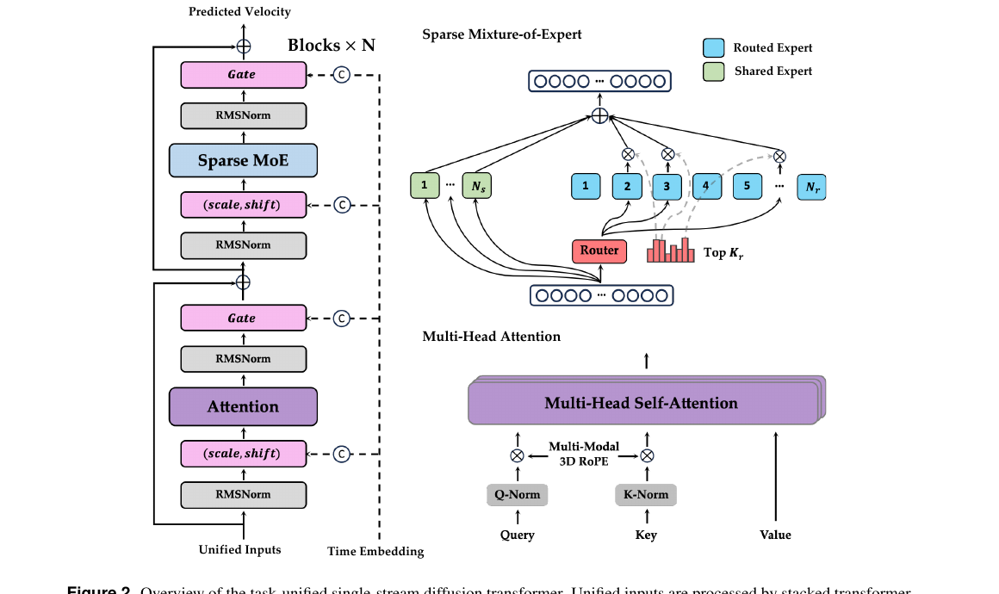
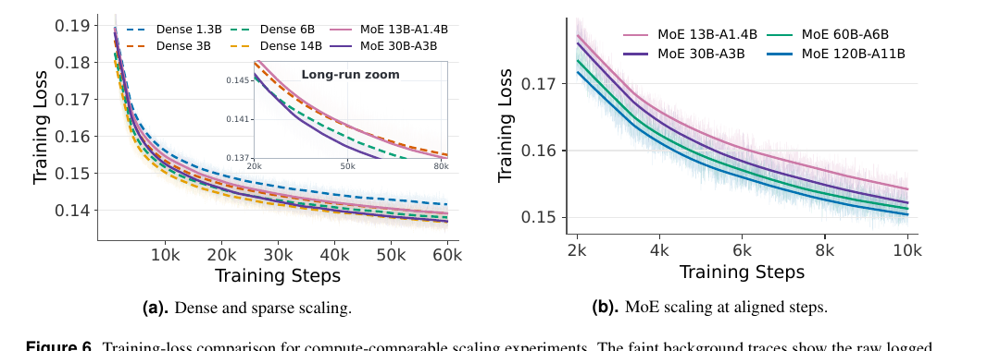
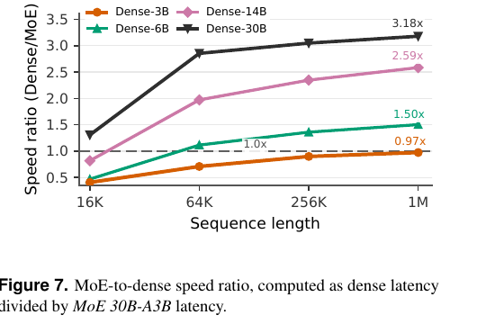
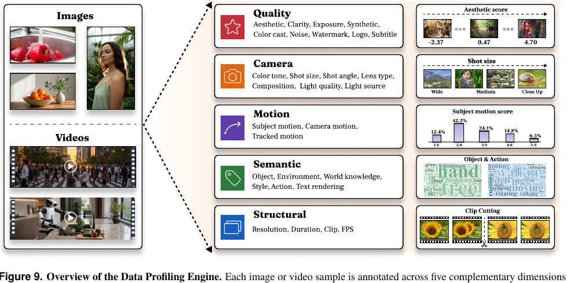
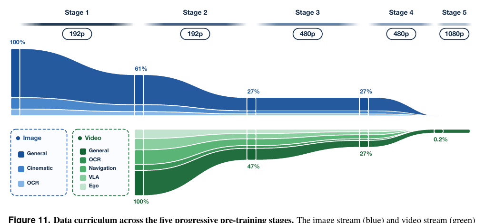
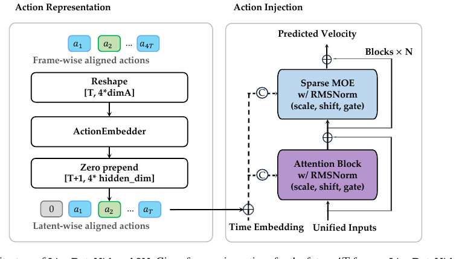

LingBot-Video: 把 MoE 搬进视频扩散——为具身智能从零 scale 的稀疏 DiT 世界模型

① 架构
单流 DiT + 稀疏 MoE(共享专家 + 组限制 sigmoid 路由,DeepSeekMoE 血统)。容量-算力解耦:30B 总参 / 3B 激活,推理保持 3B 速度。
② 数据
Data Profiling Engine 把每条样本打成五维结构化档案 → 世界知识拓扑图做分布感知采样 → 7 万小时具身视频 + 稠密结构化 caption。
③ 系统
Token 预算打包 + DP/FSDP/SP/EP 四维可组合并行 + compile-first + DeepEP。RL 侧 30B 全参权重同步 20s/step,MFU 43.9%。
④ 训练
五阶段渐进预训练(192p→1080p)→ 六路奖励 GRPO(单步探索 + CPS)→ 真实视频负样本 DiffusionNFT → A2V 动作条件世界模型 → DMD2 少步蒸馏。
⑤ 定位
不是「更好看的视频模型」,而是「更懂物理的世界模型」。评测轴是物理合理性 + 任务完成,不是纯美学。开源填补 MoE 视频空白。
1. 出发点 (Motivation)
视频生成模型这两年被越来越多人当成物理世界的隐式模拟器——既是生成系统,也是能支撑规划、策略学习、想象式控制的预测型世界模型 (world model)。但把一个「会画好看视频」的模型改造成「懂具身交互」的模型,中间隔着一道结构性的坎。论文把这道坎拆成三个互相耦合的维度:
- 架构:主流视频 DiT 是稠密的——所有参数对所有 token、所有 timestep 一视同仁地激活。视频序列动辄百万 token(1M+),稠密 scale 的推理成本高到不实际。
- 数据:训练语料被互联网视频主导,缺机器人具身先验和精确交互动力学,物理落地弱。
- 训练目标:现有对齐只优化美学和图文一致,不显式约束物理可行性、任务完成、长时程一致性。所以现有系统很难同时做到可扩展、物理一致、具身落地。
LingBot-Video 的答案就是一一对应地打这三个点:MoE 架构解决 scale,机器人增强语料解决数据,多维奖励系统解决目标。它自称是首个大规模开源 MoE 视频基础模型——这句话里每个定语都是卖点:MoE(不是稠密)、开源(不是闭源技术报告)、视频基础模型(不是专用小模型)。
MoE (Mixture-of-Experts)
把一个大 FFN 拆成很多小「专家」,每个 token 只激活其中几个;总参数(容量)很大,但单 token 算力(激活参数)很小。
容量-算力解耦
MoE 的核心红利:总参数和每 token FLOPs 不再绑死。可以把总容量扩到 30B 装物理先验,却只花 3B 的算力。
DiT (Diffusion Transformer)
用 Transformer 当扩散模型的去噪主干,是当前视频/图像生成的主流骨架。
共享专家 / 路由专家
共享专家(shared)对所有 token 常开,学通用物理先验;路由专家(routed)按 token 选,学专门化特征。DeepSeekMoE 的关键设计。
QK-Norm
算注意力前对 Query、Key 每个 head 做 RMSNorm,防止深层大模型里注意力 logit 爆炸,稳训练。
Flow Matching / 速度场
扩散的一种连续表述:模型学一个速度场 v(x,t),沿 ODE 把噪声搬到数据。本文预测的就是这个速度。
GRPO
Group Relative Policy Optimization:同一 prompt 采一组样本,用组内相对好坏当 advantage,免 critic 的 RL 方法(源自 LLM 后训练)。
CPS (Coefficients-Preserving Sampling)
GRPO 探索时注入噪声的一种 DDIM 式转移,保证注入噪声量正好匹配 schedule,不像 SDE 转换那样超标。
DiffusionNFT
一种前向过程的扩散 RL 框架:不反传去噪轨迹,直接在单步噪声态上用速度预测构造正/负策略。本文拿它做真实视频负样本微调。
A2V (Action-to-Video)
动作条件世界模型:给初始帧 + 一串机器人动作,预测未来视觉 rollout。检验模型有没有真学到物理因果。
2. 方法 (Method)
这是一篇技术报告,方法不是一条公式而是一整套设计决策。先用一张决策表把全篇的关键取舍摆出来,再逐个展开最 load-bearing 的三块:MoE 路由、单步探索 GRPO+CPS、真实视频负样本 DiffusionNFT。
| 组件 | 起点 | 消融方向 | 最终选择 | 为什么 |
|---|---|---|---|---|
| 稠密 vs 稀疏 | Dense 1.3B | Dense 1.3B / MoE 13B-A1.4B(同激活) | MoE | 同算力下 MoE 训练/验证 loss 全程更低;10× 总参数是更大的物理先验仓库(Fig 5) |
| 专家池规模 E | — | E ∈ {64, 128, 256}(激活固定 1.4B) | E=128 | 64→128 提升大,128→256 边际;128 captures 大部分容量红利又不背通信/存储包袱(Fig 3) |
| 路由粒度 | 粗(64 选 4) | 细(128 选 8)vs 粗(64 选 4),总参固定 13B | 细粒度 128 选 8 | 组合路由空间 C(128,8)≫C(64,4),定制化执行路径多;粗路由引发参数级梯度冲突和知识混杂(Fig 4) |
| 单流 vs 双流 | 双流(条件/视觉分开) | 双流 / 单流 | 单流 | 多模态特征合成更大的 GEMM,MFU 高、kernel launch 少;序列并行下通信更简单,无额外负载不均 |
| GRPO 探索 | 全步随机(Flow-GRPO) | 全步随机 / 单步随机(Flash-GRPO) | 单步随机 | 全步随机 + 轨迹级 advantage 造成严重 credit assignment 问题;单步随机让 advantage 在同一 timestep 比较,精确归因 |
| 随机采样方式 | SDE 转换 | SDE / CPS | CPS | SDE 的 Euler–Maruyama 注入噪声超标、高噪声区扩散系数爆炸要额外 clip;CPS 按构造保证总噪声匹配 schedule,奖励永远在干净视频上评 |
| RL 信号来源 | 纯奖励模型 | 纯 RM / RM + 真实视频负样本 | 加真实视频负样本 | 纯 RM 有 reward hacking 风险;真实视频当正样本、生成视频当负样本(DiffusionNFT),给一个不可 hack 的锚 |
2.1 稀疏 MoE:容量-算力解耦(全篇的地基)
稠密 FFN 逼所有 token 走同一套参数,在统一视频预训练里会造成子任务干扰:一套参数要同时建模空间纹理 vs 时间运动这种非对称域,还要兼容 T2I/T2V/TI2V 多种任务格式,外加扩散本身在高噪声(全局布局)和低噪声(细节重建)之间的 regime shift。MoE 的思路是:每个 block 只把稠密 FFN 换成 token-choice 稀疏 MoE,其余单流残差结构不动。
给定 token \(t\) 的调制后 FFN 输入 \(u_t\),MoE 支输出是共享专家 + 路由专家两部分之和:
—— 翻译: 每个 token 先过 Ns 个「常开」共享专家(不管你是谁都算,负责通用物理先验),再过被路由选中的那几个专家(每个乘上门控权重 g)。前一项是公摊底座,后一项是定制服务。每个专家都是一个 SwiGLU MLP。
路由怎么选?先算 token 和专家的亲和度(用 sigmoid 而非 softmax),加上一个在线校正 bias 后做组限制 top-K:把 \(N_r\) 个专家分成 \(N_g\) 组,每组按其 top-2 亲和度之和打分,选出 top-\(K_g\) 组,再在组内选 top-\(K_r\) 个专家:
—— 翻译: α 是 token 对每个专家的「想去程度」;rj 是第 j 个专家的可学路由嵌入。选专家时用「亲和度 + 校正 bias」的 α̃,但真正的门控权重 g 用的是**不含 bias 的原始 α**——这个「选的时候加 bias、算权重时不加」的不对称是关键(见下方代码)。
负载均衡不靠辅助 loss 硬压,而是用 DeepSeek 的无辅助损失策略:给每个专家一个动态校正 bias \(b_j\),每个 optimizer step 按它的负载偏差符号更新:
—— 翻译: 哪个专家被选得比平均多(nj > n̄),就调低它的 bias 让它下一步少被选;反之调高。只用符号,不用梯度,所以叫「无辅助损失」——不会往主 loss 里塞一个和生成质量打架的均衡项。
此外还叠了 DeepSeek-V3 的序列级辅助均衡 loss \(L_{seq}\)(Eq 7–9),因为视频序列很长,batch 级均衡会掩盖单条视频内部的路由失衡——它逼每条打包序列内部专家使用也均衡,最终 \(L = L_{diff} + \lambda_{aux}L_{seq}\)。
代码对照:路由的组限制 top-K。 论文说「分组、每组按 top-2 之和打分、选 top-\(K_g\) 组、组内选 top-\(K_r\)」——代码逐字实现了:
repo/lingbot_video/transformer_lingbot_video.py:L353-L367 — 组限制 top-K 路由(Eq 组路由)
def _group_limited_topk(self, scores_for_choice):
seq_len = scores_for_choice.shape[0]
experts_per_group = self.num_experts // self.n_group
grouped = scores_for_choice.view(seq_len, self.n_group, experts_per_group)
group_scores = grouped.topk(2, dim=-1)[0].sum(dim=-1) # 每组 top-2 之和当组分
group_idx = torch.topk(group_scores, k=self.topk_group, dim=-1, sorted=False)[1] # 选 top-K_g 组
group_mask = torch.zeros_like(group_scores)
group_mask.scatter_(1, group_idx, 1)
score_mask = (group_mask.unsqueeze(-1)
.expand(seq_len, self.n_group, experts_per_group)
.reshape(seq_len, -1))
masked = scores_for_choice.masked_fill(~score_mask.bool(), float("-inf")) # 落选组置 -inf
return torch.topk(masked, k=self.top_k, dim=-1, sorted=False)[1] # 组内选 top-K_r
而 Eq 2–4 那个「选的时候加 bias、算门控时用无 bias 分」的不对称,代码里有一条明确的 docstring 提醒,并且严格执行:
repo/lingbot_video/transformer_lingbot_video.py:L369-L385 — sigmoid 路由 + bias 不对称 + route_scale(Eq 2–4)
def forward(self, tokens: torch.Tensor):
with torch.amp.autocast(tokens.device.type, enabled=False):
logits = F.linear(tokens.float(), self.weight.float()) # fp32 算路由,数值敏感
scores = logits.sigmoid() if self.score_func != "softmax" else F.softmax(logits, dim=-1)
scores_for_choice = scores + self.e_score_correction_bias.unsqueeze(0) # 选专家:加 bias
if self.n_group is not None and self.n_group > 1:
top_indices = self._group_limited_topk(scores_for_choice)
else:
top_indices = torch.topk(scores_for_choice, k=self.top_k, dim=-1, sorted=False)[1]
top_scores = scores.gather(1, top_indices) # 门控权重:gather 无 bias 的原始 α
if self.top_k > 1 and self.norm_topk_prob:
top_scores = top_scores / (top_scores.sum(dim=-1, keepdim=True) + 1e-20) # 归一化(Eq 4)
top_scores = top_scores * self.route_scale # 乘缩放因子 γ
return top_indices, top_scores.to(tokens.dtype), logits, scores, scores_for_choice
共享专家 + 路由专家的求和(Eq 1)在 block forward 里清清楚楚——路由输出算完再加上共享专家的输出:
repo/lingbot_video/transformer_lingbot_video.py:L854-L872 — MoE 支前向:路由输出 + 共享专家(Eq 1)
def forward(self, hidden_states, padding_mask=None):
tokens = hidden_states.view(-1, self.hidden_size)
top_indices, top_scores, *_ = self.router(tokens)
out = self._run_selected_experts(tokens, top_scores, top_indices) # 路由专家加权和
out = out.view(B, -1, self.hidden_size)
if self.shared_experts is not None:
shared_output = self.shared_experts(hidden_states)
out = out + shared_output # + 共享专家(常开)
return out
规模效应(Fig 6、Fig 7):同激活算力下,MoE 13B-A1.4B 全程压过 Dense 1.3B;MoE 30B-A3B 逼近 Dense 14B。总参数从 13B scale 到 120B(激活 1.4B→11B)时训练 loss 可预测下降,符合 scaling law。推理端最漂亮:1M token 下 MoE 30B-A3B 相对 Dense 3B 只有 0.97×(近乎无路由开销),却相对 Dense 6B/14B/30B 分别快 1.50×/2.59×/3.18×。


2.2 后训练之一:单步探索 GRPO + CPS
预训练完是 flow matching 的速度回归;后训练要用 RL 把「物理合理」「任务完成」这些没法直接监督的目标顶上去。论文用六个专门奖励模型(视觉质量、图文对齐、动态程度、运动连贯、人体运动一致、物理合理性)替代传统单标量奖励,再用 GRPO 优化。
GRPO 需要随机采样才能在组内比较。Flow-GRPO/DanceGRPO 让每个去噪步都随机、共享一个轨迹级 advantage——这带来严重的 credit assignment 问题(是哪一步的随机造成了好/坏?说不清)。本文跟 Flash-GRPO:一组 rollout 只在一个去噪步随机(step index \(k\) 从前半 schedule 均匀抽、组内共享),其余步都是确定性 ODE。这样每条轨迹只有一次随机转移,advantage 在同一 timestep 比较,策略更新精确落在产生变化的那一步。
那一步的噪声注入用 CPS(而非常见的 SDE 转换)。给推理 schedule \(1=t_0>\dots>t_N=0\),在 \(t_i\) 由速度预测 \(\hat v_\theta\) 反解出干净估计和噪声估计,再做转移:
—— 翻译: 因为 (t²i+1 − s²i) + s²i = t²i+1,转移后的总噪声正好等于 schedule 规定的系数——注入的探索噪声 siε 和确定性部分「刚好凑满」,不多不少。η∈[0,1] 调探索强度(实验 0.7)。SDE 转换会注多了,留下伪影污染奖励;CPS 按构造避免,奖励永远在「干净视频」上评。
不同 timestep 的策略梯度强度随转移增益 \(\kappa_k\) 剧烈变化,所以再按增益倒数重加权 \(\lambda_k\)(Eq 15–16)拉平各步更新幅度;六个奖励尺度各异,先各自组内标准化再加权融合成单一 advantage(Eq 17)。最终目标是严格 on-policy 的重加权策略梯度,无 KL 惩罚、无参考模型、全参微调:
—— 翻译: 每个奖励先减均值除标准差(消尺度),加权求和成一个 advantage Â;损失就是「这一步转移的对数似然 × Â × 步权重 λ」的负期望。每批 rollout 只做一次梯度更新,所以重要性比恒为 1,严格 on-policy。
2.3 后训练之二:真实视频当负样本的 DiffusionNFT 微调
纯靠奖励模型有 reward hacking 风险。论文用一个不可 hack 的锚:真实视频当正样本(chosen),模型自己生成的当负样本(rejected),同一 prompt、同一随机 timestep、同一噪声。优化框架借 DiffusionNFT——前向过程优化,不反传去噪轨迹,所以每步很轻。
维护两条共享底座的预测路径:活跃策略 \(\theta\)(收梯度)和 old 策略(θ 的 EMA 拷贝,稳优化)。用它们的速度预测混出一个「隐式正策略」去模仿目标、一个「隐式负策略」去压制:
—— 翻译: 正策略是活跃与 old 的**内插**(往目标靠一点点,β 控步长);负策略是**外插**(越过 old 往反方向推,主动远离要压制的分布)。β∈(0,1] 控制活跃策略被允许偏离 old 多远。
—— 翻译: v = ε − x₀ 是真值 flow matching 速度,r∈[0,1] 是归一化奖励。真实视频 r=1(只用正项、往它靠),生成视频这里干脆令 r=0(只用负项、只推开它,免掉再挂奖励模型)。总目标 = Lchosen + Lreject + λKLLKL,KL 项把活跃策略拴在冻结 base 附近防漂移。
Fig 12/13 的定性对比显示:后训练显著修掉了手/肢体不一致、文字模糊、结构变形(通用),以及机械臂结构畸变、非物理穿透、过早松手、物体复制(具身)。
2.4 架构里的两个稳态细节(代码可查)
QK-Norm:论文说「算注意力前对 Q、K 每个 head 做 RMSNorm」。代码里 norm_q/norm_k 是作用在 head_dim 上的 RMSNorm,而且先 norm 再上 RoPE:
repo/lingbot_video/transformer_lingbot_video.py:L211-L250 — QK-Norm(per-head RMSNorm)+ 3D RoPE
class LingBotVideoAttention(nn.Module):
def __init__(self, hidden_size, num_heads, norm_eps, qkv_bias, out_bias):
...
self.norm_q = LingBotVideoRMSNorm(self.head_dim, norm_eps) # per-head
self.norm_k = LingBotVideoRMSNorm(self.head_dim, norm_eps)
def forward(self, x, rotary_emb, attention_mask=None, packed_indices=None, ...):
q = self.to_q(x).unflatten(2, (self.num_heads, self.head_dim))
k = self.to_k(x).unflatten(2, (self.num_heads, self.head_dim))
v = self.to_v(x).unflatten(2, (self.num_heads, self.head_dim))
q = apply_rotary_emb(self.norm_q(q), rotary_emb) # 先 QK-Norm,后 RoPE
k = apply_rotary_emb(self.norm_k(k), rotary_emb)
...
adaLN-single:论文说「一次性算共享时间步调制,每 block 加一张 layer-specific 可学表」。代码里 scale_shift_table(6D)加到 token 级 temb 上,chunk 成 6 份(msa/mlp 各 shift/scale/gate),门控走 tanh、scale 走 1+x——而且注释明确点出敏感路径全程 fp32:
repo/lingbot_video/transformer_lingbot_video.py:L937-L964 — adaLN-single 调制 + fp32 敏感路径
mod = temb6.view(x.shape[0], x.shape[1], -1) + self.scale_shift_table.unsqueeze(0) # 共享调制 + 每层表
shift_msa, scale_msa, gate_msa, shift_mlp, scale_mlp, gate_mlp = mod.chunk(6, dim=-1)
gate_msa, gate_mlp = gate_msa.tanh(), gate_mlp.tanh()
scale_msa, scale_mlp = 1.0 + scale_msa, 1.0 + scale_mlp
bulk_dtype = self.attn.to_q.weight.dtype
attn_in = (self.norm1(x) * scale_msa + shift_msa).to(bulk_dtype) # 调制/norm 在 fp32,只在 bf16 Linear 边界降精度
attn_out = self.attn(attn_in, rotary_emb, attention_mask, packed_indices=packed_indices, ...)
x = x + (gate_msa * self.norm_post_attn(attn_out)).to(x.dtype) # 门控残差
2.5 单流里怎么区分「条件 token」和「视觉 token」——代码考证
§2.1 说单流把视觉 latent 和条件 token 拼成一条序列,靠「3D MM-RoPE 把它们放到非重叠的 temporal 坐标区间」来区分:条件 token 用纯时间坐标 \((i,0,0)\),视觉 patch 用 \((L+1+f, h, w)\)。这句话的代码能逐字对上——而且对上之后能澄清一个常见误解:RoPE 根本不负责区分模态。(这也是读者常问的:"RoPE 只是位置编码,凭什么区分是两张视觉图、还是一张语义一张图像?")
考证一:RoPE 坐标确实非重叠,但它只管位置。 make_joint_position_ids 逐字实现了论文的坐标分配:
repo/lingbot_video/transformer_lingbot_video.py:L164-L180 — 3D RoPE 联合位置构造(条件 vs 视觉:非重叠 temporal 区间)
def make_joint_position_ids(text_len, grid_t, grid_h, grid_w, device):
# video t 轴起点 = text_len + 1;video 占 (t, h, w)
tt = torch.arange(grid_t, device=device) + (text_len + 1)
grid = torch.stack(torch.meshgrid(tt, hh, ww, indexing="ij"), -1).flatten(0, 2) # (t≥L+1, h, w)
text_t = torch.arange(text_len, device=device) + 1
text_pos = torch.stack([text_t, zeros, zeros], -1) # 条件 token: (i, 0, 0),纯时间轴
return torch.cat([grid, text_pos], dim=0) # [video ; text]
—— 翻译: 条件 token 全挤在 h=w=0 的时间轴上、编号 1..L;视觉 token 的时间编号从 L+1 起、再铺开 h/w 空间格。两者 temporal 编号不重叠(1..L vs ≥L+1)——和论文 §2.1 一字不差。
考证二:模态其实靠"走哪个投影",不是靠 RoPE。 forward 里条件 token 和视觉 token 从一开始就走两条独立的可学投影,再 concat 成单流,RoPE 只在拼好之后贴位置:
repo/lingbot_video/transformer_lingbot_video.py:L1132-L1153 — 两条 modality-specific 投影 + 拼接 + 事后 RoPE
x = self.patch_embedder(patch_tokens) # 视觉:patchify → Linear 投影
text = self.text_embedder(encoder_hidden_states) # 条件:RMSNorm → Linear-SiLU-Linear(CondProjection)
joint = torch.cat([x, text], dim=1) # [video; text] 拼成单流
rotary = self.rope(make_joint_position_ids(text_lens_list[i], gt, gh, gw, device)) # 只给位置
patch_embedder(视觉)和 text_embedder(= LingBotVideoTextEmbedder,条件,见 L197-L205)是两个完全不同的投影,把两类 token 送进不同的特征子空间。backbone 靠 token 的 content 就知道谁是谁——RoPE 那一步只贴位置,不贴身份。
结论(回应"RoPE 凭什么区分模态"): 三条职责正交——
- 模态身份 = 走哪个投影(
patch_embeddervstext_embedder)→ 内容/特征子空间(代码 L1132 / L1147); - 位置 = 3D RoPE(条件在时间轴 1..L,视觉在 ≥L+1 加空间)→ 代码 L164-L180;
- temporal 的非重叠只是位置隔离;即便两个 token 的 RoPE 坐标撞了,身份也不会撞,因为身份在 content 里。所以"用同一个 t 维度既标模态又标实例"的二义性根本不存在——t 从不承担模态区分。
交叉验证到 Z-Image(arxiv 2511.22699,同源设计的三模态版): Z-Image 的 S3-DiT 是同一原理的三模态推广——text(Qwen3-4B)、image semantic(SigLIP-2,仅编辑)、VAE image 各过各的 modality-specific processor(= 这里的独立投影),再用 3D Unified RoPE 摆位置;编辑时"参考图 vs 目标图"这同模态内的两张图,才用 temporal offset + 不同 timestep(clean/noisy)区分实例。可见「模态靠投影、位置靠 RoPE、同模态实例靠 temporal offset/timestep」是这一系单流 MM-DiT 的共同法则——LingBot 的两模态版在代码里可完全证实,Z-Image 把它扩到三模态。
2.6 数据引擎与级联 refiner(略表)
- Data Profiling Engine(Fig 9):每条样本打成结构化/语义/运动/相机/质量五维档案,VLM 标注为主 + TransNetV2 切镜头、LocoTrack 追踪运动、HPSv3 打美学、OmniAID 查 AI 生成。
- 世界知识拓扑图(Fig 10):50,000 叶概念 + 1,000 中间类 → LLM 辅助合并成 25 顶层组;外加动作树。用节点级 loss 反馈上/下采样,补长尾。
- 稠密结构化 caption:图/视频/VLA/第一视角四类共享 JSON schema;推理端用两阶段 Caption Rewriter(Expand 用零样本 LLM 出简描述 → Map 用 LoRA 微调模型填 JSON,严格 bounded completion 防幻觉)弥合训练-推理 prompt 分布差。
- 级联 refiner(Fig 8):base 出 480p,refiner 用阈值化 rectified flow(\(\tau\sim U(0.85,0.95)\),只在 \(t\le\tau\) 的近条件噪声区去噪)升到 1080p,保留 base 的语义和运动,只补高频细节。


2.7 A2V:把世界模型变成动作条件预测器
预训练完的 LingBot-Video 是个 T2V/TI2V 模拟器;A2V 把它改造成「给初始帧 + 机器人动作序列 → 预测未来 rollout」的预测器。三步:①重写 caption 只描述初始状态(加严格未来泄漏检查,逼模型靠动作而非文字驱动演化);②动作转成相对增量、flatten 后过 ActionEmbedder,prepend 一个零动作对齐 \(T+1\) 视觉 latent,当残差注入每个 block;③ActionEmbedder 最后一层零初始化,让动作支渐进融入 backbone。用 Fourier GR-1 数据集训 8k 步。

3. 结论 (Key findings)
公开基准(具身/物理向):
- RBench(650 机器人交互 prompt,5 任务类 + 4 具身形态):LingBot-Video 平均 0.620,开源第一,且超过闭源 Wan 2.6(0.607)、Seedance 1.5 pro(0.584)、Veo 3(0.563)。子项里 Manipulation 0.578、Reasoning 0.634、Humanoid 0.758、Quadruped 0.689 均领先或接近最好。
- Physics-IQ Verified(66 个受控物理实验,I2V 模式):40.4,开源第一,险胜 Cosmos 3(39.5),大幅甩开 Hunyuan Video 1.5(33.4)、Wan 2.2 A14B(32.2)。
内部基准:TI2V 任务上通用质量 + 具身域双料第一;T2V 通用质量第二,但具身域仍稳超 Cosmos——说明即使没有初始图条件,模型也带着内生物理先验。
规模与效率:同算力 MoE 全程压稠密;120B 前期 scaling 可预测;1M token 下 MoE 30B-A3B 保持 3B 级速度,相对 Dense-30B 快 3.18×。
用户研究(GSB,400 prompt/对):TI2V 上对所有开源基线 Good>Bad(对 Wan 2.2 5B 优势尤大);T2V 上稳赢 Wan 2.2 5B / LongCat / LTX-2.3,和更强的 Hunyuan 1.5、Cosmos 3 接近;整体仍落后最强商用模型。
系统数字:RL 侧 30B 全参权重同步 20s/step,GB 级中间态跨节点 50ms 内交换,端到端 MFU 43.9%;compile-first + 全块激活重算把 MFU 提 1.9×。
4. 实现细节 (Implementation notes)
- 单流打包成 1D 序列:不 stack 成矩形张量,而是把所有样本的视觉 + 条件 token 拼成一条
[x1,y1,x2,y2,...],配 cumulative seqlen + attention mask 走 FlashAttention varlen,一次 forward 处理整个打包 batch 且防跨样本注意力泄漏。代码里packed_indices路径正是走flash_attn_varlen_func_v3(transformer_lingbot_video.py:L260-L269),与论文的 token 预算打包一致。 - 四维可组合并行:DP / FSDP(→HSDP)/ SP(Ulysses)/ EP(专家分片,DeepEP 加速 dispatch-combine)用命名多维 device mesh 组合,不改核心训练循环。FSDP sharding 在激活重算和编译决策之后才应用,以保证 norm/routing scale 这类数值敏感参数留在 FP32。
- 数值敏感路径全程 FP8→FP32 分层:路由 logits 用 fp32 算(L370-L371);adaLN 调制表、norm、routing gate 保 FP32,只在 bf16 Linear 边界降精度(L944-L948 注释明确写了这替换了旧的 ambient autocast)。Speed-First serving 才把路由专家换成 FP8 Triton kernel。
- 专家计算三条后端:
torch._grouped_mm分组 GEMM(有则用)/ per-expert for-loop 回退 / SGLang fused Triton(可 FP8)——同一 MoE 权重按环境变量切后端(L531-L568, L613-L638),这是「fidelity-first 参考路径 vs speed-first 优化路径」在代码里的落地。
paper↔code 落差(如实标注):开源仓库是推理 + serving 栈,不是训练栈。所以:
- ✅ 架构完全可查:MoE 路由(Eq 1–4)、组限制 top-K、QK-Norm、adaLN-single、单流打包注意力,全部逐行对得上,连「选加 bias / 门控不加 bias」的不对称都有 docstring 守着。
- ⚠️ 训练/后训练组件不在开源码里:CPS 转移(Eq 13–16)、六路奖励模型、GRPO 目标(Eq 17–18)、DiffusionNFT 微调(Eq 19–24)、A2V 的 ActionEmbedder、DMD2 蒸馏(Eq 25)——这些是训练时逻辑,仓库里没有对应实现(
grep -i action/cps/grpo在lingbot_video/只命中 argparse 的action=)。推理侧的 scheduler 是scheduling_flow_unipc.py(UniPC flow),不是训练用的 CPS。想复现后训练得自己按论文公式实现。 - ⚠️ 在线 bias 更新 / 序列级辅助 loss(Eq 5–10) 是训练时行为;推理码里
e_score_correction_bias只是个已训好的 buffer(L351),不做更新。 - 结论:**这是一个"权重 + 推理开源、训练配方靠论文"**的发布形态——架构可信度极高(代码为证),训练配方可信度取决于你信不信论文的公式描述。
5. 批判性总结 (Critical assessment)
Strengths
- 架构-数据-目标三点闭环打得干净:不是「拿个开源模型 + 具身数据 finetune」,而是从零 scale 一个为具身设计的 MoE。MoE 把「装物理先验要大容量」和「1M token 推理要省算力」这对矛盾解耦得漂亮,3.18× 加速是硬指标。
- 评测轴选对了:RBench + Physics-IQ Verified 都是物理/具身正确性基准,不是纯美学。在这两个轴上超过 Wan 2.6 这种闭源强模型,比「VBench 涨零点几」有说服力。
- 后训练很克制且有针对性:六路奖励每个都对应一个具体失败模式(静态塌缩、慢动作、人体畸变、物理穿透),单步探索 GRPO 解决 credit assignment,DiffusionNFT + 真实视频负样本给 reward hacking 上了个锚。这套组合拳的动机链条完整。
- 开源诚意:权重(Dense + MoE)+ 推理码 + rewriter + Diffusers/SGLang 兼容包,架构层面完全可审计。
Limitations / open questions
- 训练栈没开源,复现后训练(GRPO/DiffusionNFT/A2V/DMD2)只能照论文公式自己写——而这些正是「具身」卖点的来源。架构好复现,配方难复现。
- T2V 通用质量仅第二,GSB 对最强商用模型(Kling-V3、Seedance 2.0 等)仍落后;「开源第一」是真的,但和闭源天花板还有距离。
- 物理评测的粒度存疑:RBench/Physics-IQ 是「看起来符不符合物理」的代理指标,和「能不能真驱动机器人策略」之间还有 gap。A2V 只在 GR-1 + 两个 OOD 集上验证,规模有限。
- 六路奖励 + 世界知识拓扑图 + 五阶段课程 = 巨大的工程复杂度,很多超参(如 \(\eta=0.7\)、\(\tau\sim U(0.85,0.95)\)、\(\lambda_{aux}\)、各奖励权重 \(w_r\))论文给了值但没给敏感性分析,外人调起来是黑盒。
- "world model" 的强主张主要靠生成质量基准背书,缺「用它做规划/策略学习真能涨点」的下游闭环实验(论文把这些列为 A2V 的 motivation 但没做完整实证)。
When to use / not use
- 该用:想要一个开源、推理高效(3B 级速度 / 30B 级容量)、对机器人/具身/物理场景友好的视频/世界模型底座;或想学 MoE 视频 DiT 的工程落地(路由、并行、serving 全套可抄)。
- 不该用:纯追求最高美学质量的创意生成(闭源商用仍更强);或需要开箱即用的具身后训练配方(训练码缺位,得自己实现)。
延伸阅读 (Further reading)
交叉验证比较 (Cross-validation against similar work) — LingBot-Video 的后训练同时踩在「扩散 RL」和「MoE」两个已有研究脉络上,拿三篇本库已精读的工作对照它的结论与观察:
| 工作 | 核心结论 | 关键观察 | 与本文的异 / 同 |
|---|---|---|---|
| 本文 (LingBot-Video) | MoE 解耦容量/算力 + 多维奖励 GRPO + 真实视频负样本,能做出物理向 SOTA 开源视频世界模型 | 全步随机 GRPO credit assignment 差;纯奖励模型会 reward hacking;单步探索 + CPS + DiffusionNFT 修之 | — |
| awm-2025 | Flow-GRPO 那套 per-step 高斯似然本质是 noisy-\(x_s\) 上的 DSM,多出 \(d\cdot\kappa\) 目标方差,是它慢的根;换回 flow matching loss × advantage 提速 8–23× | 扩散 RL 的 surrogate 和预训练目标脱节是病灶 | 同:都认为逐步随机 GRPO 有病(本文说 credit assignment,AWM 说目标方差),都想「回到更接近预训练的更新」;异:本文靠单步随机 + CPS 治标,AWM 靠换损失函数治本。两者其实互补,可叠加 |
| deepseek-v4-2026 | MoE(共享+路由专家、无辅助损失均衡、序列级辅助 loss)是 million-token 高效智能的地基 | 稀疏路由 + 分组限制是 scale 的关键杠杆 | 同:本文的 MoE 路由(sigmoid 亲和、bias 校正、组限制 top-K、序列级 aux loss)几乎逐条继承 DeepSeekMoE 谱系;异:DeepSeek 是 LLM/文本,本文把同一套搬到视频扩散并证明在异质视觉 token 上同样吃香 |
| worldforge-2026 | 不训练,靠 inference-time 模块就能把 6-DoF 相机轨迹注入 Wan2.1,3D FID/4D FVD SOTA | 视频扩散已隐含足够世界先验,可零训练操控 | 异(方法论对立):WorldForge 主张「先验够了,推理时挖」;本文主张「先验不够,得从零 scale + 灌具身数据 + RL 对齐」。同:都把视频扩散当世界模型用。分歧点是「现有模型的物理先验到底够不够」 |
分歧的可能成因:① 本文 vs AWM 的差异在入手层次——本文改采样过程(单步 + CPS),AWM 改优化目标(损失函数),二者不互斥,理论上叠加能更快更稳;② 本文 vs WorldForge 的分歧在目标场景——WorldForge 只要相机可控的创意视频(先验确实够),本文要的是机械臂抓取这种精确物理交互(现成先验确实不够,得灌 7 万小时具身数据),所以一个选零训练、一个选从零 scale,本质是任务对物理精度的要求不同。
相关工作 (Related work)
- self-forcing-2025 — 视频扩散的自展开训练 + DMD 蒸馏;本文 §5.4 的 DMD2 少步蒸馏是同一谱系。
- dapo-2025 — GRPO 在 LLM 侧的工程修复(Clip-Higher / Dynamic Sampling 等);本文把 GRPO 搬到扩散侧,踩的坑(credit assignment、on-policy)有共性。
6. 研究启发 (Transferable takeaways)
1. 容量-算力解耦是"用大先验但不加推理税"的通法
凡是「任务异质、需要大容量装先验、但推理算力受限」的场景(不止视频——多任务感知、长上下文),MoE 的「30B 容量 / 3B 激活」范式都值得抄。关键不是省训练,是省**推理**。
2. 奖励拆维,一个奖励对一个失败模式
单标量奖励掩盖复杂失败。把「静态塌缩」「慢动作」「人体畸变」「物理穿透」各配一个专门奖励,比调一个大而全的奖励模型更可控、更好 debug。这个「奖励 = 失败模式清单」的思路可迁移到任何多失败模式的生成任务。
3. 给 RL 一个不可 hack 的锚
纯奖励模型必被 hack。用「真实数据当正、生成当负」的偏好对(DiffusionNFT/RealDPO 思路)给优化钉一个现实锚点,是对抗 reward hacking 的便宜好使的招——生成任务通用。
4. 反直觉点:随机"少"一点反而学得准
直觉上 RL 探索越多越好,但 Flow-GRPO 全步随机反而因 credit assignment 混乱而学不好;Flash-GRPO 只让**一步**随机,把功劳精确归因到那一步,效果更好。探索的**可归因性**比探索的**量**更重要。
5. "开源"可以分层:权重+推理开,训练靠论文
LingBot 的发布形态——架构代码完全可审计、训练配方留在公式——是一种现实的开源策略。对读者的启示:判断一个"开源"模型,先看它开的是权重、推理还是训练,三者可信度和可复现性天差地别。
6. 反直觉点:数据过滤要"非对称"
Stage 4 对通用视频严过滤、对稀缺具身源几乎不过滤——刻意用冗余通用数据换长尾动作数据。均匀的高质量门槛会把稀缺但高价值的数据也筛掉;按来源价值调过滤力度才对。
讨论 / Comments
评论托管在本仓库的 GitHub Discussions, 需 GitHub 账号。